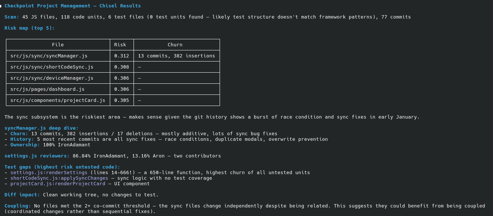
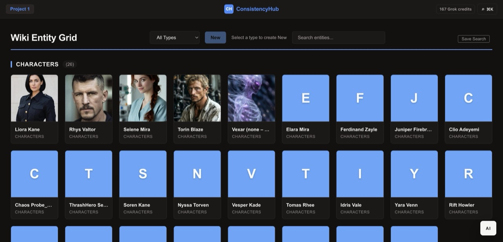

Web app testing
I go through the parts of your app that customers use, like sign-up, login, billing and the everyday tasks it's built for. I use it the way a new customer would. You get a list of what's broken or rough, and what to fix first.
Western Sydney, NSW. Remote. Email first.
I test the parts of your app that customers touch, like sign-up, login and billing. I also run automated checks against WCAG 2.2 AA plus a manual pass. You get a written list of what to fix first, in priority order.
A written scope first, then a fixed price for that engagement, agreed before work starts.
Services
Three services. Each one ends with a written, plain-English list, in priority order.
I go through the parts of your app that customers use, like sign-up, login, billing and the everyday tasks it's built for. I use it the way a new customer would. You get a list of what's broken or rough, and what to fix first.
I run automated checks against WCAG 2.2 AA plus a manual pass, on the pages and journeys we agree. You get a list of what I found and what to fix first. It covers the pages I checked. It isn't a sign-off for the whole app.
Not taking bookings yet
An AI-assisted review of a system you own: sign-up and login, billing, how keys and secrets are handled, configuration, and user roles. You get a plain-English list of hardening steps, in priority order. It isn't penetration testing.
How it works
A written scope first, then a fixed price for that engagement, agreed before work starts. Then I do the work and send you the list.
You tell me what you want covered. I write down which app, which parts, and what's out.
I quote one price for that engagement. Not hourly. Not monthly. Nothing starts until you've agreed to the scope and the price in writing.
A plain-English list of what I found and what to fix first. It's a snapshot of what I saw on the day, within the scope.
I only test or review systems you own, and only after you've given me the go-ahead in writing. I don't test services you use but don't own, like Stripe, Clerk, Google, Firebase, Railway, Base44, your hosting provider or AI model providers. Where your app connects to one of them, I only look at your side of it.
Proof I can build
Auspex and Chisel are testing tools. The rest is other software I've built and shipped. The full list is on Work.




Products
Pricing and full detail live on each product site.

World-building that catches its own mistakes. Wiki, documents, maps, and continuity checks. Files stay in your OneDrive.
About
I'm Aron Amos. I run Iron Adamant from Western Sydney, NSW, and work remotely. I'm a software developer. I build and ship my own tools and products, and many of them are open source on GitHub.
Two of them are testing tools. Auspex checks that an AI agent really saw the expected words on a web page. Chisel suggests which tests to run after a code change. That's my proof I can build. The testing service is new. The tools on the Work page are what I can show you so far.
I write what I find for the person who has to decide what to fix, not just the developer.
What would you like checked?